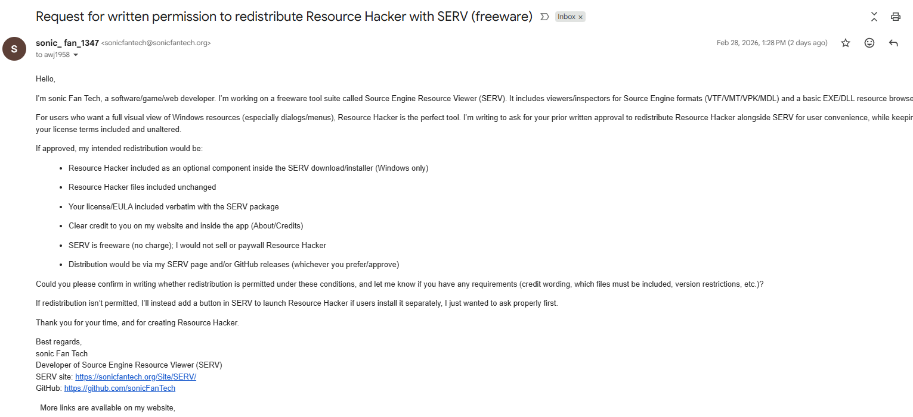
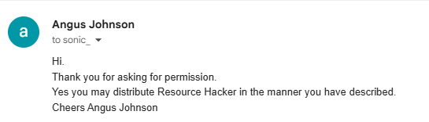

About SERV
A general overview of the project, separate from the Beta 2 release notes.
What is Source Engine Resources Viewer?
Source Engine Resources Viewer, shortened to SERV, is a Windows tool suite for opening, inspecting, previewing, and working with files used by Source Engine games and mods. Instead of trying to force every file type into one giant program, SERV uses a central Hub that launches separate specialized tools.
Why SERV exists
Source Engine projects use many different file formats: maps, textures, materials, archives, models, particles, scripts, scenes, sounds, saves, and demo files. SERV is meant to make those formats easier to inspect without needing to manually jump between unrelated utilities.
How SERV works
The Hub scans the Tools folder, reads each tool's tool.servtool.json, checks required DLLs, and lets you launch tools from one place.
What SERV is not
SERV is not an official Valve tool, not a replacement for Hammer, and not a full game editor. It is a fan-made inspection and helper suite for learning about and working with Source Engine resources.
Beta 2 / C++ Recode
This section is about the new Beta 2 build specifically.
What changed in Beta 2?
Beta 2 is a full native C++/Qt recode of SERV. The old Python-based tool suite has been replaced with a new C++ Hub and mostly rewritten native tools. The new design uses small EXEs with dedicated management DLLs, making tools easier to update and organize.
Native Hub
New Explorer/MMC-style Hub with tool metadata scanning, categories, status checks, launch buttons, and missing dependency detection.
Tool DLLs
Each major tool now has one or more DLLs for parsing, management, or rendering support. The EXE stays mostly focused on the GUI.
Beta notes
MDL rendering, DEM playback, and some extraction/preview workflows are functional but still experimental and may need more work.
Still not remade in C++ yet
Only two old SERV tools are still waiting for their C++ rewrite: SWATCH Inspector and EXE/DLL Inspector. They can be added later without changing the Hub design.
Downloads
Choose the installer or portable package.
Recommended downloads
Installer is recommended for normal use. Portable is useful for testing, USB drives, or keeping SERV in a custom tools folder.
Installer vs Portable
| Build | Use this when |
|---|---|
| Installer | You want normal installation, Start Menu entries, and easier setup. |
| Portable 7z | You want to extract SERV anywhere and manage the folder yourself. |
Beta 2 Tool List
Main tools included in the current C++ rewrite.
Tools
| Tool | Status | Purpose | Main DLL |
|---|---|---|---|
| SERV Hub | C++ | Main launcher and tool manager | SERVManagement.dll |
| Source BSP Explorer | Existing C++ tool | BSP viewing, inspection, and PlayTest support | Tool-specific DLLs |
| VPK Browser | C++ | Browse and extract VPK archives | VALVE-PK_Management.dll |
| VTF Viewer | C++ | Preview and export Valve Texture Format files | VALVE-TEX_Management.dll |
| VMT Viewer | C++ | Inspect Valve material files and texture paths | VALVE-MAT_Management.dll |
| MDL Viewer / Inspector | Experimental | Model info, companion files, OpenGL preview, texture browser | VALVE-MDL_*.dll |
| VMF Viewer / Inspector | C++ | View and parse Hammer map source files | VALVE-VMF_Management.dll |
| NUT Viewer / Inspector | C++ | Inspect Squirrel scripts | VALVE-NUT_Management.dll |
| VCD Viewer / Inspector | C++ | Inspect Source choreography scene files | VALVE-VCD_Management.dll |
| PCF Inspector | C++ | Inspect particle files and extract readable references | VALVE-PCF_Management.dll |
| SND Inspector | C++ | Inspect sound scripts and audio metadata | VALVE-SND_Management.dll |
| RES Inspector | C++ | Inspect resource lists and referenced files | VALVE-RES_Management.dll |
| SAV Inspector | C++ | Inspect save/binary data, strings, and references | VALVE-SAV_Management.dll |
| Launch Options Builder | C++ | Build Source/Steam launch option strings | VALVE-LAUNCH_Management.dll |
| DEMO Player / Inspector | Experimental | Inspect .dem files, playlist support, and Source playback launching | VALVE-DEMO_Management.dll |
| SWATCH Inspector | Not remade yet | Planned C++ rewrite | None yet |
| EXE/DLL Inspector | Not remade yet | Planned Windows binary/resource inspector | None yet |
Portable Layout
Recommended folder structure for the portable build.
Folder example
SERV/ ├─ SERV Hub.exe ├─ SERVManagement.dll ├─ Tools/ │ ├─ Viewers/ │ │ ├─ VPKBrowser/ │ │ ├─ VTFViewer/ │ │ ├─ VMTViewer/ │ │ ├─ MDLViewer/ │ │ ├─ VMFViewer/ │ │ └─ SourceBSPExplorer/ │ ├─ Inspectors/ │ │ ├─ NUTViewer/ │ │ ├─ VCDViewer/ │ │ ├─ PCFInspector/ │ │ ├─ SNDInspector/ │ │ ├─ RESInspector/ │ │ ├─ SAVInspector/ │ │ └─ DEMOPlayerInspector/ │ └─ Other/ │ └─ LaunchOptionsBuilder/ ├─ legal/ ├─ config/ └─ logs/
Each tool folder should contain its EXE, required custom DLLs, Qt runtime DLLs, platforms/qwindows.dll, and tool.servtool.json.
Legal / Third-party notes
SERV is fan-made and not affiliated with Valve.
Valve / Source Engine
SERV is a fan-made tool suite. Valve, Source, Portal, Half-Life, Team Fortress, Counter-Strike, and related names belong to their respective owners. SERV is not official Valve software.
Resource Hacker permission proof
Resource Hacker may be included as an optional unchanged third-party component with permission/credit/legal notes preserved.

Permission request screenshot

Permission granted screenshot